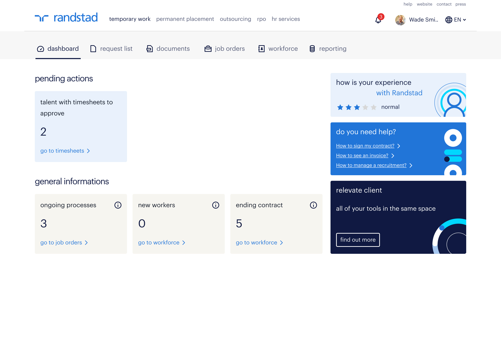
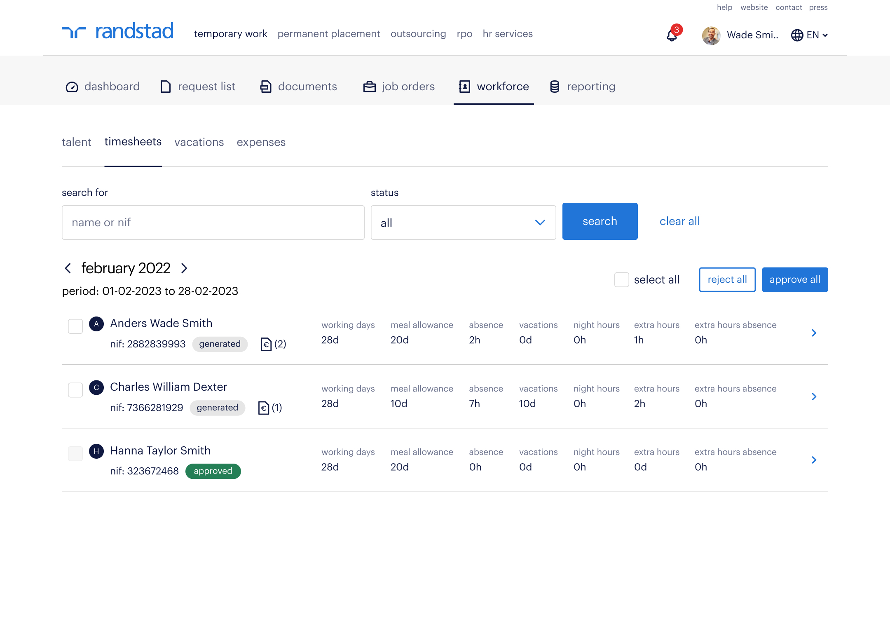

Randstad — SaaS Platform
The Challenge
At Randstad, the main challenge was improving support for both workers and clients by optimizing internal processes. Traditional methods no longer met the demands of the digital age, where seamless, accessible, and personalized experiences are essential.
The Solution
We developed a digital platform to support workers and clients. This new software automated routine tasks, improved communication, and offered self-service options — all while ensuring data privacy and security.
Key Objectives
- Efficiency: Streamline and automate admin tasks to free up time for workers and clients.
- User-friendliness: Design an intuitive interface that's easy for users of all technical levels.
- Data security: Implement strong security measures to protect sensitive HR data.
My Role
As the lead Product Designer, I worked with a cross-functional team, including a project manager, two product owners, two tech leads, and three developers. I validated my designs through 1:1 meetings, design critiques, and team presentations.
Responsibilities
- Designed user flows and created high-fidelity mockups and prototypes in Figma, ensuring alignment with business requirements.
- Ensured the use of a design system in Figma to maintain workflow efficiency and design consistency across the project.
- Collaborated within Agile methodology with project managers, product owners, and developers to define requirements, refine designs, and prioritize user stories.
- Developed application screens using established UI patterns and brand themes within OutSystems.
- Worked closely with the development team to guarantee accurate implementation of designs.




Understanding the users' problems
Throughout the project, we followed an Agile approach. After each feature release, we collected feedback from users and made adjustments to better meet their needs and expectations. Here are a few key problems we identified and addressed.
Problem A — In Client A's environment, users manage a high volume of contracts requiring digital signatures and needed a clear way to track how many were pending, as they often needed to sign all of them at once.
To address this, we implemented an alert that displays the total number of contracts awaiting signature. By clicking the "Sign All" button, the system automatically applies a digital signature to all pending contracts at once, streamlining the process.


Problem B — At Client B, the contract signing process involves multiple users. It's essential to track the status and flow of these contracts to identify which users are responsible for signing at each stage.

Problem C — Managers who are also workers often struggle with efficiently managing their team's vacation requests. They needed a simple way to track and monitor pending requests for approval.
To address this, we added a small badge on each month's tab that appears only when there are vacation requests pending approval. We also introduced a different color for weekends, making it easier to identify days of the week at a glance.


Mobile Design


The Impact
This ongoing project has had a positive impact on the company. According to specific metrics, the adoption of the portal reached nearly 100%, with more than 500 users actively engaging. A substantial number of tasks are now being efficiently executed directly through the portals, leading to a reduction in support ticket submissions.
Challenges
One key challenge was understanding our diverse user base, which included many users unfamiliar with digital tools. This required me to create an interface that was both visually appealing and user-friendly for those with limited digital literacy.
Adapting the design for mobile also brought technical challenges, as the portals were web applications developed using OutSystems. I had to consider technical limitations, including the feasibility of incorporating specific components — a delicate balance between design aesthetics and technical feasibility.
On a personal level, I improved my communication skills by defending design decisions and explaining the importance of certain features. I also deepened my understanding of mobile design, gaining insights into how user expectations and behaviors differ between desktop and mobile.